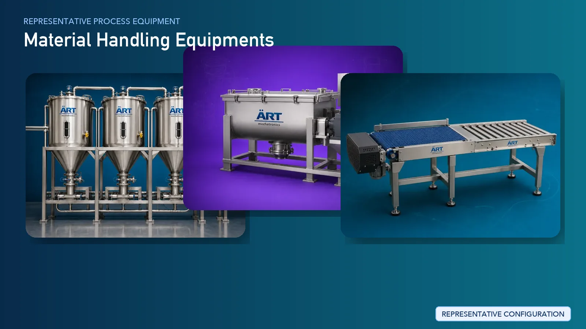
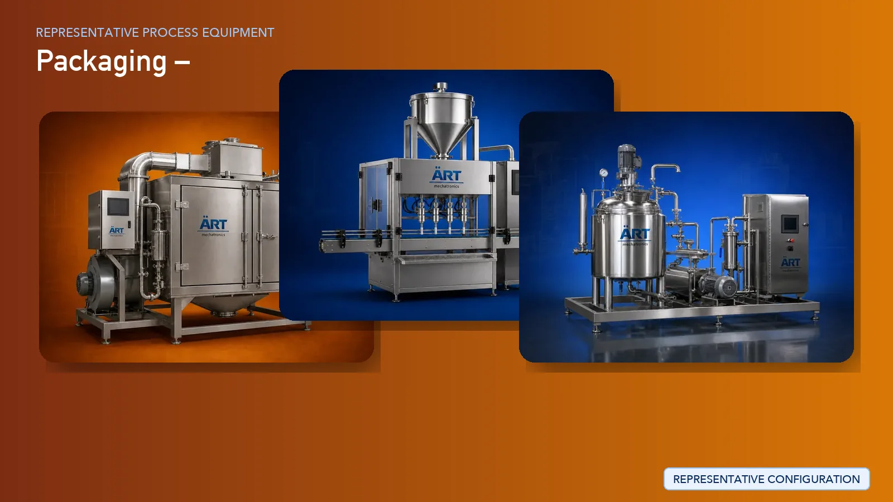

Turnkey plants & machinery for every industry
Explore innovative, end-to-end customised engineering solutions designed to optimise performance, efficiency and scalability across industries.
Browse the machine catalogue →Industries We Serve
Tailored solutions for food processing, advanced materials and industrial manufacturing. Open any industry to see the machines and the complete line.
 Flavour Enhancer
Flavour Enhancer
Related categories
 Pasta
Pasta
Related categories
 Nuts
Nuts
Related categories
 Flour
Flour
Related categories
 Pulses
Pulses
Related categories
 Oil
Oil
Related categories
 Rice
Rice
Related categories
 Confectionery
Confectionery
Related categories
 Dairy
Dairy
Related categories
 Milk
Milk
Related categories
 Beverage
Beverage
Related categories


 Household Cleaning
Household Cleaning
Related categories
 Perfume
Perfume
Related categories
 Plastic
Plastic
Related categories
 Paint
Paint
Related categories


All industries

Supari
Supari (betelnut) processing plays a critical role in the production of pan masala, mouth fresheners, and flavored…
View details →
Pan Masala
Pan masala manufacturing is a highly specialized process that requires precision in ingredient handling, uniform…
View details →
Sweet Supari
Sweet supari, also known as flavored betelnut, is a popular mouth freshener product widely consumed across global…
View details →
Mouth Freshner
Mouth fresheners, commonly known as mukhwas, are widely consumed FMCG products made using a blend of seeds,…
View details →
Silver Coated Flavoured Cardomom (ELAICHI)
Silver coated elaichi (cardamom) is a premium mouth freshener product widely used in the FMCG and confectionery…
View details →
Silver Coated Flavoured Dated (KHAJOOR)
Silver coated flavoured dates are premium value-added products widely consumed as mouth fresheners, festive treats,…
View details →
Tobacco Leaf
Raw tobacco leaf processing is a critical upstream operation in the tobacco supply chain, where harvested leaves are…
View details →
Cigarette
Cigarette manufacturing is a highly automated and precision-driven industrial process that involves tobacco…
View details →
Cigar Manufacturing Plant & Machinery Solutions
Cigar manufacturing is a specialized process that combines precise tobacco preparation with controlled rolling,…
View details →
Shisha Tobacco
Shisha tobacco, also known as hookah flavour molasses, is a premium processed product made by blending tobacco with…
View details →
Rolling Tobacco
Rolling tobacco, also known as fine cut tobacco, is a processed product designed for manual cigarette rolling…
View details →
Dokha
Dokha tobacco is a finely processed, high-strength tobacco product widely used in traditional smoking applications.…
View details →
Oral Pouches
Oral pouches, including nicotine pouches, caffeine pouches, snus, snuff, and filter khaini, are rapidly growing…
View details →
Khaini Chewing Tobacco
Khaini, a widely consumed chewing tobacco product, is manufactured through precise blending of processed tobacco with…
View details →
Zarda Chewing Tobacco
Zarda is a flavored chewing tobacco product widely used alongside pan masala and mouth fresheners. The manufacturing…
View details →
Tobacco Powder
Tobacco powder, commonly known as gul or manjan, is a finely processed product used in traditional oral applications.…
View details →
Htp / Hnb
Heated Tobacco Products (HTP), also known as Heat-Not-Burn (HNB) products, represent a rapidly growing segment in the…
View details →
Spices Powder Processing Plant & Machinery
Spice powder manufacturing is a critical segment in the global food industry, covering products such as turmeric…
View details →
Seasoning
Seasoning powders are widely used across the food industry in products such as snacks, chips, noodles, ready-to-eat…
View details →
Feed
Animal feed manufacturing is a large-scale industrial process that involves precise formulation, grinding, mixing,…
View details →
Chips & Crisps
Chips and crisps manufacturing is a fast-growing segment in the global snack food industry, covering products such as…
View details →
Savoury (NAMKEEN)
Namkeen (savoury snacks) manufacturing is a fast-growing segment in the global FMCG food industry, covering products…
View details →
Flavoured Peanut
Peanut processing is a rapidly growing segment in the global snack food industry, covering products such as salted…
View details →
Puffed Snack
Puffed snacks, also known as extruded snacks, are one of the fastest-growing segments in the global FMCG industry.…
View details →
Foxnut (MAKHANA)
Foxnut, commonly known as makhana, is a premium healthy snack gaining rapid popularity in global markets. Products…
View details →
Popcorn
Popcorn is one of the most popular ready-to-eat snack products worldwide, available in various formats such as butter…
View details →
Cereals & Flakes
Breakfast cereals, including corn flakes, wheat flakes, and multigrain cereals, are a major segment in the global food…
View details →
Pasta Production Plant & Machinery Solutions
Pasta is one of the most widely consumed food products globally, available in various forms such as penne, rotini,…
View details →
Noodle Production Plant & Machinery Solutions
Noodles are one of the most widely consumed food products globally, available in multiple formats such as spaghetti,…
View details →
Instant Noodle
Instant noodles are one of the most widely consumed ready-to-cook food products globally, offering convenience, long…
View details →
Dry Fruit
Dry fruits and nuts are a premium segment in the global food industry, including products such as dates, cashew nuts,…
View details →
Ground Nut
Groundnut (peanut) processing is a highly versatile segment in the food and agro-processing industry, producing…
View details →
Areca Nut
Areca nut processing, also known as betelnut or supari processing, is a specialized agro-processing segment that…
View details →
Betel Nut
Betel nut (supari) processing is a key segment in the pan masala and mouth freshener industry. The process involves…
View details →
Cashew Nut
Cashew processing is a high-value agro-processing industry where raw cashew nuts (in shell) are converted into edible…
View details →
Coco Nut
Coconut processing is a major agro-based industry where raw coconuts are processed to obtain clean coconut kernels for…
View details →
Fox Nut (MAKHANA)
Foxnut (makhana) processing is a specialized agro-processing industry where raw foxnut seeds are transformed into…
View details →
Almond Processing Plant & Machinery Solutions
Almond processing is a high-value segment in the global dry fruit industry where raw almonds (in-shell) are processed…
View details →
Dates Processing Plant & Machinery Solutions
Dates processing is a major segment in the global dry fruit and food industry, especially in the Middle East and…
View details →
Wal Nut
Walnut processing is a high-value segment in the global dry fruit industry where raw walnuts (in-shell) are processed…
View details →
Pistachio Processing Plant & Machinery Solutions
Pistachio processing is a high-value segment in the global dry fruit industry where raw pistachios (in-shell) are…
View details →
Wheat Flour
Flour milling is one of the most essential industries globally, producing products such as wheat flour (atta), refined…
View details →
Corn & Maize Flour
Corn (maize) flour processing is a major segment in the global food and agro-processing industry, producing products…
View details →
Multi Grain Flour
Multigrain flour processing is a rapidly growing segment in the global food industry, driven by increasing demand for…
View details →
Grains
Grain processing units play a critical role in the agricultural supply chain by procuring raw grains directly from…
View details →
Pulses Processing Plant & Machinery Solutions
Pulses processing, commonly known as dal milling, is a critical segment in the global agro and food processing…
View details →
Seed Processing Plant & Machinery Solutions
Seed processing is a crucial segment in the agro and edible oil industry, involving the preparation of oilseeds such…
View details →
Edible Oil -
Edible oil processing is one of the most critical industries in the global food supply chain, producing oils from…
View details →
Rice Processing Plant & Machinery Solutions
Rice processing is one of the most essential agro-processing industries globally, converting raw paddy into clean,…
View details →
Bread & Bun
Bread manufacturing is one of the most essential segments in the global bakery industry, producing products such as…
View details →
Rusk & Toast
Rusk, also known as toast biscuit, is a popular bakery product known for its long shelf life, crisp texture, and wide…
View details →
Biscuit & Cookies
Biscuit and cookie manufacturing is a major segment in the global food and FMCG industry, producing a wide range of…
View details →
Wafer
Wafer biscuits are a highly popular snack product known for their light, crispy texture and layered cream-filled…
View details →
Chocolate
Chocolate bar manufacturing is a premium segment in the global confectionery industry, producing products such as milk…
View details →
Cake Manufacturing Plant & Machinery Solutions
Cake manufacturing is a fast-growing segment in the global bakery and FMCG industry, producing products such as fruit…
View details →
Energy Bar
Energy bars and protein bars are among the fastest-growing segments in the global health and nutrition industry. These…
View details →
Peanut Butter
Peanut butter manufacturing is a fast-growing segment in the global health food and FMCG industry, producing smooth,…
View details →
Honey Processing Plant & Machinery Solutions
Honey processing is a high-value segment in the natural food and FMCG industry, where raw honey collected from…
View details →
Syrup Manufacturing Plant & Machinery Solutions
Syrup manufacturing is a key segment in the global food and beverage industry, producing products such as chocolate…
View details →
Ketchup & Sauce
Ketchup and sauce manufacturing is a major segment in the global food and FMCG industry, producing products such as…
View details →
Spread, Dips & Dressing
Dips, spreads, and dressings are rapidly growing segments in the global food and FMCG industry, including products…
View details →
Pickle & Chutney
Pickle and chutney manufacturing is a well-established segment in the global food processing industry, producing…
View details →
Dairy
Dairy processing is a highly advanced and essential sector in the global food industry, involving the transformation…
View details →
Coffee Processing Plant & Machinery Solutions
Coffee processing is a highly advanced segment in the global beverage industry, producing products such as instant…
View details →
Tea Processing Plant & Machinery Solutions
Tea processing is one of the most established and high-volume industries in the global beverage sector, producing…
View details →
Green Tea & Flavoured Tea
Green tea and flavored tea processing is a rapidly growing segment in the global beverage and wellness industry,…
View details →
Cocoa & Hot Chocolate
Cocoa powder and hot chocolate manufacturing is a premium segment in the global food and beverage industry, producing…
View details →
Milk Powder
Milk powder manufacturing is a highly advanced segment in the dairy industry, producing products such as skim milk…
View details →
Premix Powder
Premix powder manufacturing is a fast-growing segment in the global beverage and FMCG industry, producing products…
View details →
Agro Processing
Agro processing is the backbone of the global food industry, involving the transformation of raw agricultural produce…
View details →
Food Processing
Food processing is a large-scale industrial sector that transforms raw materials such as fruits, vegetables, chicken,…
View details →
Pharmaceutical
Pharmaceutical and nutraceutical processing is a highly regulated and precision-driven industry, producing products…
View details →
Soap & Detergent
Soap and detergent manufacturing is one of the largest segments in the global FMCG industry, producing products such…
View details →
Perfume & Essential Oil
Perfume manufacturing is a premium segment in the global personal care and luxury FMCG industry, producing products…
View details →
Cosmetic
Cosmetic manufacturing is a fast-growing segment in the global personal care and FMCG industry, producing products…
View details →
Chemical Manufacturing Plant & Machinery Solutions
Chemical manufacturing is a foundational industry serving multiple sectors including FMCG, pharmaceuticals,…
View details →
Plastic Recycling
Plastic recycling is a rapidly growing industrial sector focused on converting plastic waste into reusable raw…
View details →
Plastic
Plastic product manufacturing is a major industrial sector producing a wide range of products such as plastic…
View details →
Pellet -
Pellet manufacturing is a rapidly growing sector in the renewable energy and industrial fuel industry, producing…
View details →
Paint Manufacturing Plant & Machinery Solutions
Paint manufacturing is a major segment in the global chemical and construction industry, producing products such as…
View details →
Ink Manufacturing Plant & Machinery Solutions
Ink manufacturing is a specialized segment in the chemical and printing industry, producing products such as printing…
View details →
Pigment Powder
Pigment manufacturing is a critical segment in the chemical industry, producing color pigments used in paints, inks,…
View details →
Iron & Steel
The iron and steel industry, along with aluminum and metal processing sectors, forms the backbone of fabrication,…
View details →
Construction -
The construction materials industry is one of the largest and most critical sectors globally, supplying materials such…
View details →
Hospitality Industry Engineering Solutions
The hospitality industry—including hotels, resorts, malls, hospitals, commercial complexes, and high-rise…
View details →
Dust Collection System & Pollution Control Equipment
Industrial dust collection and pollution control systems are essential across almost every manufacturing sector to…
View details →
Material Handling Equipments
Material handling systems are the backbone of modern industrial operations, enabling the efficient movement, transfer,…
View details →
Packaging Machines & Automation Systems
Packaging is a critical stage in every manufacturing process, ensuring product safety, shelf life, branding, and…
View details →No direct match? Tell us about your industry and process. Ask us on WhatsApp →